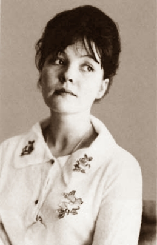
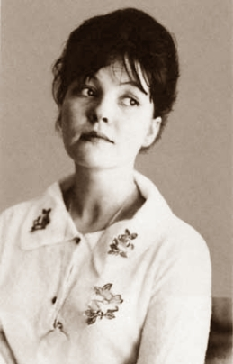

Poetry in Translation
Дано мне тело -- что мне делать с ним,
Таким единым и таким моим?
За радость тихую дышать и жить
Кого, скажите, мне благодарить?
Я и садовник, я же и цветок,
В темнице мира я не одинок.
На стекла вечности уже легло
Мое дыхание, мое тепло.
Запечатлеется на нем узор,
Неузнaваемый с недавних пор.
Пускай мгновения стекает муть,
Узора милого не зачеркнуть.
- Осип Мандельштам

Ночь, улица, фонарь, аптека,
Бессмысленный и тусклый свет.
Живи еще хоть четверть века -
Всё будет так. Исхода нет.
Умрешь - начнешь опять сначала
И повторится все, как встарь:
Ночь, ледяная рябь канала,
Аптека, улица, фонарь.
- Александр Блок

Мне нравится, что вы больны не мной,
Мне нравится, что я больна не вами,
Что никогда тяжелый шар земной
Не уплывет под нашими ногами.
Мне нравится, что можно быть смешной -
Распущенной - и не играть словами,
И не краснеть удушливой волной,
Слегка соприкоснувшись рукавами.
Мне нравится еще, что вы при мне
Спокойно обнимаете другую,
Не прочите мне в адовом огне
Гореть за то, что я не вас целую.
Что имя нежное мое, мой нежный, не
Упоминаете ни днем, ни ночью - всуе...
Что никогда в церковной тишине
Не пропоют над нами: аллилуйя!
Спасибо вам и сердцем и рукой
За то, что вы меня - не зная сами! -
Так любите: за мой ночной покой,
За редкость встреч закатными часами,
За наши не-гулянья под луной.
За солнце не у нас над головами, -
За то, что вы больны - увы! - не мной,
За то, что я больна - увы! - не вами!
- Марина Цветаева

Послушайте!
Ведь, если звезды зажигают -
значит - это кому-нибудь нужно?
Значит - кто-то хочет, чтобы они были?
Значит - кто-то называет эти плевочки жемчужиной?
И, надрываясь
в метелях полуденной пыли,
врывается к богу,
боится, что опоздал,
плачет,
целует ему жилистую руку,
просит -
чтоб обязательно была звезда! -
клянется -
не перенесет эту беззвездную муку!
А после
ходит тревожный,
но спокойный наружно.
Говорит кому-то:
"Ведь теперь тебе ничего?
Не страшно?
Да?!"
Послушайте!
Ведь, если звезды
зажигают -
значит - это кому-нибудь нужно?
Значит - это необходимо,
чтобы каждый вечер
над крышами
загоралась хоть одна звезда?!
- Владимир Маяковский
Когда в тоске самоубийства
Народ гостей немецких ждал,
И дух суровый византийства
От русской церкви отлетал,
Когда приневская столица,
Забыв величие свое,
Как опьяневшая блудница,
Не знала, кто берет ее,—
Мне голос был. Он звал утешно,
Он говорил: «Иди сюда,
Оставь свой край глухой и грешный,
Оставь Россию навсегда.
Я кровь от рук твоих отмою,
Из сердца выну черный стыд,
Я новым именем покрою
Боль поражений и обид».
Но равнодушно и спокойно
Руками я замкнула слух,
Чтоб этой речью недостойной
Не осквернился скорбный дух.
- Анна Ахматова

Белеет парус одинокий
В тумане моря голубом!..
Что ищет он в стране далекой?
Что кинул он в краю родном?..
Играют волны - ветер свищет,
И мачта гнется и скрыпит...
Увы, - он счастия не ищет
И не от счастия бежит!
Под ним струя светлей лазури,
Над ним луч солнца золотой...
А он, мятежный, просит бури,
Как будто в бурях есть покой!
-Михаил Лермонтов

Февраль. Достать чернил и плакать!
Писать о феврале навзрыд,
Пока грохочущая слякоть
Весною черною горит.
Достать пролетку. За шесть гривен,
Чрез благовест, чрез клик колес,
Перенестись туда, где ливень
Еще шумней чернил и слез.
Где, как обугленные груши,
С деревьев тысячи грачей
Сорвутся в лужи и обрушат
Сухую грусть на дно очей.
Под ней проталины чернеют,
И ветер криками изрыт,
И чем случайней, тем вернее
Слагаются стихи навзрыд.
- Борис Пастернак

Если жизнь тебя обманет,
Не печалься, не сердись!
В день уныния смирись:
День веселья, верь, настанет.
Сердце в будущем живет;
Настоящее уныло:
Все мгновенно, все пройдет;
Что пройдет, то будет мило.
- Александр Пушкин
 


Ангелы со мной не говорят.
Любят осиянные селенья,
Кротость любят и печать смиренья.
Я же не смиренен и не свят:
Ангелы со мной не говорят.
Темненький приходит дух земли.
Лакомый и большеглазый, скромный.
Что ж такое, что малютка — темный?
Сами мы не далеко ушли...
Робко приползает дух земли.
Спрашиваю я про смертный час.
Мой младенец, хоть и скромен, — вещий.
Знает многое про эти вещи,
Что, скажи-ка, слышал ты о нас?
Что это такое — смертный час?
Темный ест усердно леденец.
Шепчет весело: «И все ведь жили.
Смертный час пришел — и раздавили.
Взяли, раздавили — и конец.
Дай-ка мне четвертый леденец.
Ты рожден дорожным червяком.
На дорожке долго не оставят,
Ползай, ползай, а потом раздавят.
Каждый, в смертный час, под сапогом,
Лопнет на дорожке червяком.
Разные бывают сапоги.
Давят, впрочем, все они похоже,
И с тобою, милый, будет то же,
Чьей-нибудь отведаешь ноги...
Разные на свете сапоги.
Камень, нож иль пуля, всё — сапог.
Кровью ль сердце хрупкое зальется,
Болью ли дыхание сожмется,
Петлей ли раздавит позвонок —
Иль не всё равно, какой сапог?»
Тихо понял я про смертный час.
Я ласкаю гостя, как родного,
Угощаю и пытаю снова:
Вижу, много знаете о нас!
Понял, понял я про смертный час.
Но когда раздавят — что потом?
Что, скажи? Возьми еще леденчик,
Кушай, кушай, мертвенький младенчик!
Не взял он. И поглядел бочком:
«Лучше не скажу я, что — потом».
- Зинаида Гиппиус
Прощай,
позабудь
и не обессудь.
А письма сожги,
как мост.
Да будет мужественным
твой путь,
да будет он прям
и прост.
Да будет во мгле
для тебя гореть
звездная мишура,
да будет надежда
ладони греть
у твоего костра.
Да будут метели,
снега, дожди
и бешеный рев огня,
да будет удач у тебя впереди
больше, чем у меня.
Да будет могуч и прекрасен
бой,
гремящий в твоей груди.
Я счастлив за тех,
которым с тобой,
может быть,
по пути.
- Иосиф Бродский

Над Бабьим Яром памятников нет.
Крутой обрыв, как грубое надгробье.
Мне страшно.
Мне сегодня столько лет,
как самому еврейскому народу.
Мне кажется сейчас –
я иудей.
Вот я бреду по древнему Египту.
А вот я, на кресте распятый, гибну,
и до сих пор на мне – следы гвоздей.
Мне кажется, что Дрейфус –
это я.
Мещанство –
мой доносчик и судья.
Я за решеткой.
Я попал в кольцо.
Затравленный,
оплеванный,
оболганный.
И дамочки с брюссельскими оборками,
визжа, зонтами тычут мне в лицо.
Мне кажется –
я мальчик в Белостоке.
Кровь льется, растекаясь по полам.
Бесчинствуют вожди трактирной стойки
и пахнут водкой с луком пополам.
Я, сапогом отброшенный, бессилен.
Напрасно я погромщиков молю.
Под гогот:
“Бей жидов, спасай Россию!”-
насилует лабазник мать мою.
О, русский мой народ! –
Я знаю –
ты
По сущности интернационален
Но часто те, чьи руки нечисты,
твоим чистейшим именем бряцали.
Я знаю доброту твоей земли.
Как подло,
что, и жилочкой не дрогнув,
антисемиты пышно нарекли
себя “Союзом русского народа”!
Мне кажется –
я – это Анна Франк,
прозрачная,
как веточка в апреле.
И я люблю.
И мне не надо фраз.
Мне надо,
чтоб друг в друга мы смотрели.
Как мало можно видеть,
обонять!
Нельзя нам листьев
и нельзя нам неба.
Но можно очень много –
это нежно
друг друга в темной комнате обнять
Сюда идут?
Не бойся — это гулы
самой весны –
она сюда идет.
Иди ко мне.
Дай мне скорее губы.
Ломают дверь?
Нет – это ледоход…
Над Бабьим Яром шелест диких трав.
Деревья смотрят грозно,
по-судейски.
Все молча здесь кричит,
и, шапку сняв,
я чувствую,
как медленно седею.
И сам я,
как сплошной беззвучный крик,
над тысячами тысяч погребенных.
Я –
каждый здесь расстрелянный старик.
Я –
каждый здесь расстрелянный ребенок.
Ничто во мне
про это не забудет!
“Интернационал”
пусть прогремит,
когда навеки похоронен будет
последний на земле антисемит.
Еврейской крови нет в крови моей.
Но ненавистен злобой заскорузлой
я всем антисемитам,
как еврей,
и потому –
я настоящий русский!
- Евгений Евтушенко